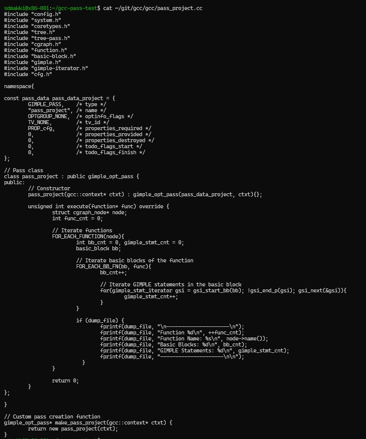
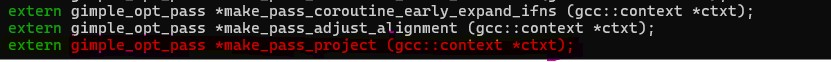
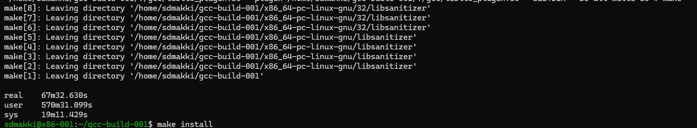
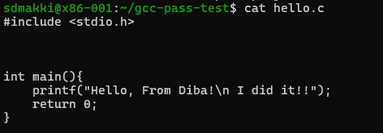

Building a Basic GCC Pass: My Journey in Compiler Development
Published on: March 9, 2025
Here we go again with another blog. This is actually a very important one because it took 24 hours of my lifetime, basically a full day. are you ready to start?
based on lab 4 which I built a GCC this is basically a follow up to that. In this lab we want to build a Basic GCC pass. BASIC? Yes, as what you heard! seems like this is only a basic one. Thanks god it wasn’t a complicated one otherwise I would have lost it :D
in the open-source world, compiler development plays an important role in optimizing and transformation the code efficiency, that is why we learning it on this course which has the exact name if you wonder.
This blog documents my journey from setting up GCC to successfully implement my pass.
first lets understand the concept of GCC passes.
concept
A GCC pass is a stage in the compilation process, where code transformations or optimizations occur. Passes can analyze, modify, or optimize intermediate representations (IRs) like GIMPLE and RTL before generating final machine code.
my goal here was to add a new pass that inspects functions within compiled programs, counting their basic blocks and GIMPLE statements.
To be honest there is not a very specific instructions out there or maybe I was not smart enough to find it this easily that’s why I needed to go through many many different sources, to first get familiar with the concept and be able to actually complete this Project.
lets start!
Step 1: Setting Up GCC
First we’re going to review a little what we did on Lab 4. I needed to build a custom version of GCC to ensure that my changes wouldn’t interfere with the system-installed GCC
rm -rf ~/gcc-build-001 ~/gcc-test-001 ~/git
git clone git://gcc.gnu.org/git/gcc.git ~/git/gcc
mkdir ~/gcc-build-001
cd ~/gcc-build-001
~/git/gcc/configure --prefix=$HOME/gcc-test-001
Then, I installed the necessary dependencies and compiled GCC:
sudo dnf install -y gcc g++ make libmpc-devel mpfr-devel gmp-devel
time make -j$(nproc) |& tee build.log
make install
To verify that I was using my custom GCC build:
export PATH=$HOME/gcc-test-001/bin:$PATH
which gcc
I got this out put:
/home/sdmakki/gcc-test-001/bin/gcc
now lets move on to step 2.
Step 2: Creating the GCC Pass
I navigated to the GCC source directory and created a new pass file and I called it pass_project.cc
cd ~/git/gcc/gcc
nano pass_project.cc

Step 3: Registering the Pass
To integrate the pass into GCC, I modified the following files in ~/git/gcc/gcc/ by adding the following lines into
1.tree-pass.h.
2. Makefile.in at where OBJS = \ stored
3. passes.def
Step 4: Rebuilding GCC
I try to build but I got an error so here I started over again and I deleted my gcc-build-001 and build again:
rm -rf ~/gcc-build-001
mkdir ~/gcc-build-001
cd ~/gcc-build-001
~/git/gcc/configure --prefix=$HOME/gcc-test-001
time make -j$(nproc) |& tee build.log

after building I used the following command for installing:
make install
now its time for Testing the Custom GCC Pass
Step 5: Creating a Test Program
I made a very simple test file and I called it hello.c
Step 6: Compiling with the Custom Pass and Checking the Dump File
gcc -Wall -g -fdump-tree-pass_project hello.c -o hello
What This Does:
- -Wall → Enables all warnings.
- -g → Adds debugging symbols.
- -fdump-tree-pass_project → Runs your custom GCC pass and saves its output to a dump file.
- -o hello → Creates an executable named hello.
ls | grep hello.c.019t.pass_project
this command check if the dump file was created
cat hello.c.019t.pass_project
this command shows the inside of the file

Final Thoughts and conclusions
We have an expression which says, “Everything is easy once you know how.”. This seems so easy and because I made some changes I did it couple of times and I have no idea why it took me a full day in total to be able to make a pass. The silver lining is that I can make passes in my sleep now and I can call myself an expert.
Anyway, That was a journey. If I had a dollar for every time I had to rebuild GCC, I could probably afford a whole lunch. Compilers don’t mess around, and debugging GCC is like trying to solve a mystery novel where the author hates you.
But all jokes aside, this project taught me a lot. I now understand how compiler passes work, how to modify GCC, and most importantly, how to stay sane while waiting for long builds to complete. If anyone ever tells you adding a simple pass to GCC is “easy,” run—run far, far away.
In the end, it was worth it. Seeing my pass work correctly felt like a victory dance moment, except I was too tired from debugging to actually dance. Would I do it again? Absolutely. Would I cry a little first? Also, yes but not a little.